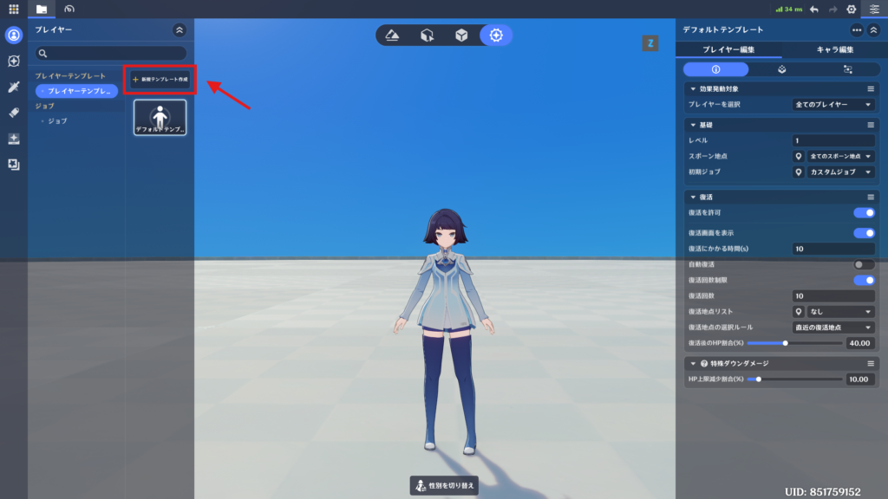
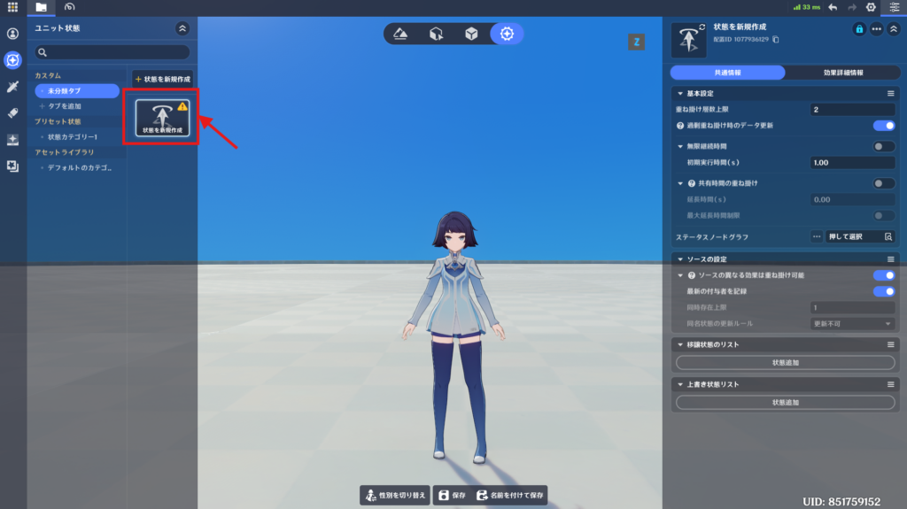
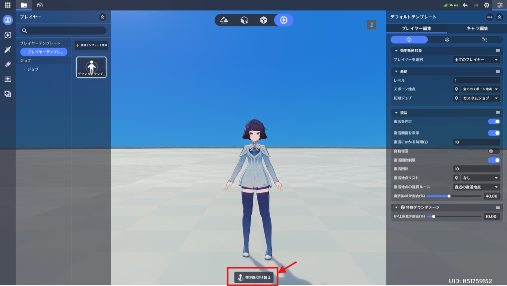
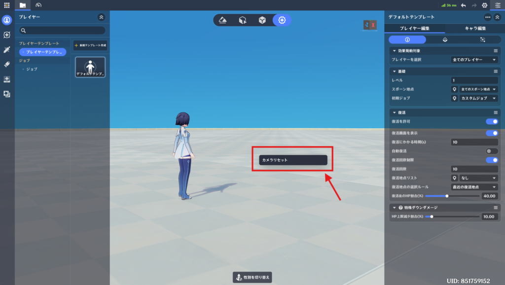

戦闘プリセットモード
⭐1.編集モジュール切替
左のサイドバーから編集モジュールを切り替えることができます。
⭐2.作成と保存

アセット欄にある「新規作成」ボタンを押下すると、現在選択中の編集モジュールにコンテンツを作成できます。

「プレイヤー/ジョブエディタ」で行った変更は自動的に保存されます。
一方で、「ユニット状態エディタ」「スキルエディタ」「ローカル投射物エディタ」「アイテムエディタ」「エフェクト作成エディタ」で行った変更は手動で保存する必要があります。
アセット欄に黄色の！アイコンが表示されている場合は、未保存ですので、下部メニューの「保存」「名前を付けて保存」で上書き保存または新規作成するようにしてください。
⭐3.性別切替

エディタ画面内のモデルの性別を切り替えるには、画面下部にある「性別を切り替え」ボタンを押してください。
⭐4.カメラのリセット

「戦闘プリセット」モードで、何もないエリアで右クリックをすると「カメラリセット」のオプションが表示されます。
これをクリックすると、カメラが初期状態に戻ります。